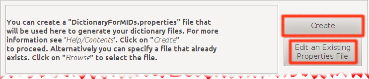
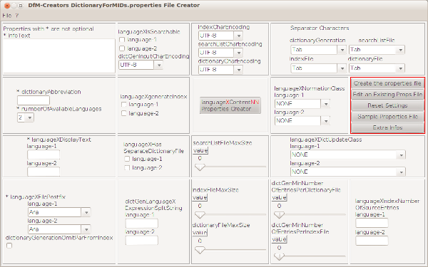
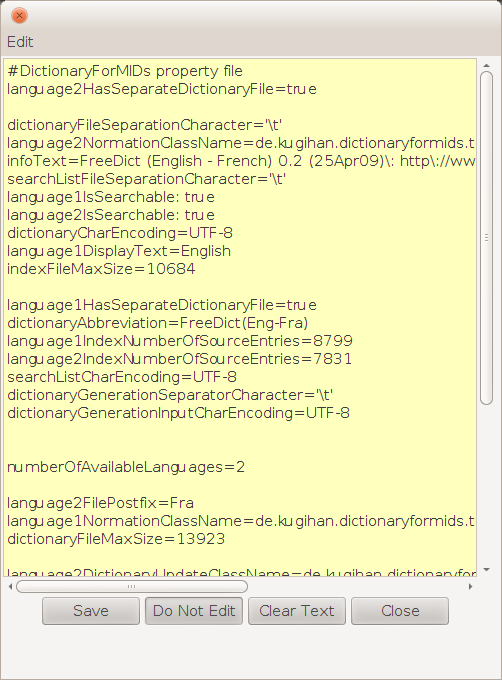
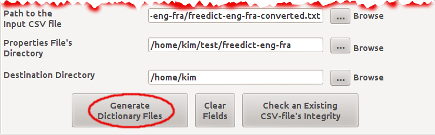
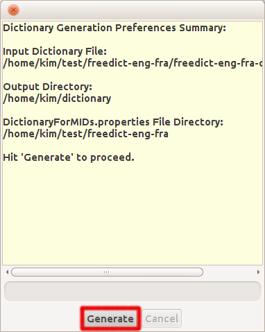

The DictionaryGeneration (GUI) Documentation
Creating a DictionaryForMIDs.properties file
After converting the dictionary file into a CSV file, you have to generate the dictionary files into the format of DictionaryForMIDs. For that, you have to use DictionaryGeneration. Note that before generating the files, you have to create a properties file (DictionaryForMIDs.properties). To create such file you can use just about any text editor, but it is far more convenient to use the application 'PropertiesEditor' included in DictionaryForMIDs-Creator. PropertiesEditor makes it very easier and very pleasant to create a properties file. Almost everything is there written for you, you just have to choose among ComboBoxes, Lists, CheckBoxes etc. and PropertiesEditor will write the final DictionaryForMIDs.properties file for you.

Hit the Create button to launch the PropertiesEditor window.
Hit the Edit an Existing... button to select a DictionaryForMIDs.properties file
and launch the PropertiesEditor to edit it and adapt it to another dictionary file.
Creating a DictionaryForMIDs.properties file from scratch
The PropertiesEditor window. Click here to view the image in its full size.

Go here for the complete documentation on how to create
a DictionaryForMIDs.properties file with DfM-Creator's PropertiesEditor.
Editing an Existing DictionaryFroMIDs.properties file
If you already have a properties file that only has to be modified so as to be used
with another dictionary file, you should hit the Edit an Existing Properties File
button. A window will pop up and enable you to choose the file. The file should
have the name DictionaryForMIDs.properties otherwise you cannot edit it.
The Properties Preview/Edit window

After finishing to manually edit your properties file, save it with the Save button.
Filling the fields in
After creating a properties file you have to specify its location, the location of the destination
directory and the full path to the input CSV file (either converted by DictdToDictionaryForMIDs
or created directly from Microsoft Office's Excel or OpenOffice.org's Impress). After that,
hit the Generate Dictionary Files button. This will take you to the dictionary generation
preferences summary window and will enable you to actually generate the dictionary files.

Launching the dictionary generation preferences summary window
Below is a screen-shot of the summary window. Hit the Generate button
to go on to the actual dictionary generation process. Note that this process might
take up to hours to complete; depending on the size of the input dictionary file.

Generating the dictionary files
Hit the Generate button to launch the generation process. If everything goes well, DictionaryForMIDs-Creator will generate your dictionary files in a directory named dictionary that is created under the output directory you provided.| Prev | DfM-Creator Home | Next |
| DictdToDictionaryForMIDs | BitmapFontGenerator |